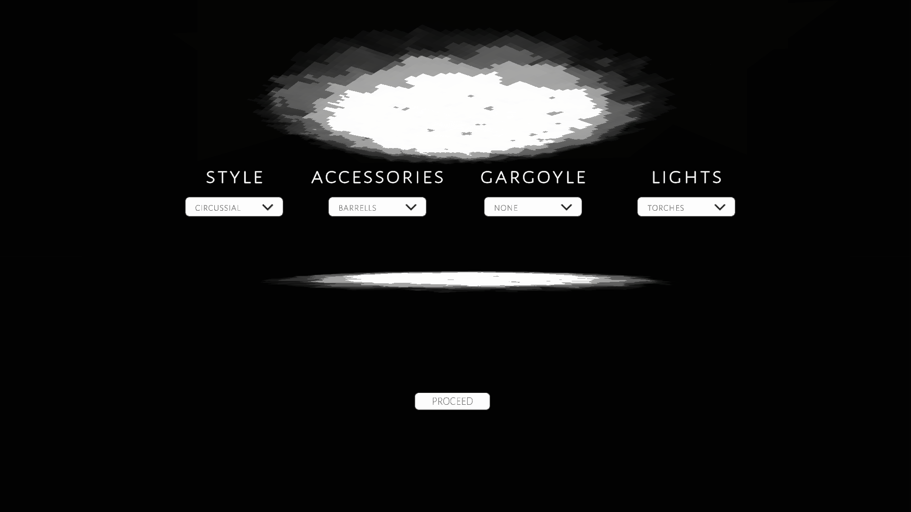
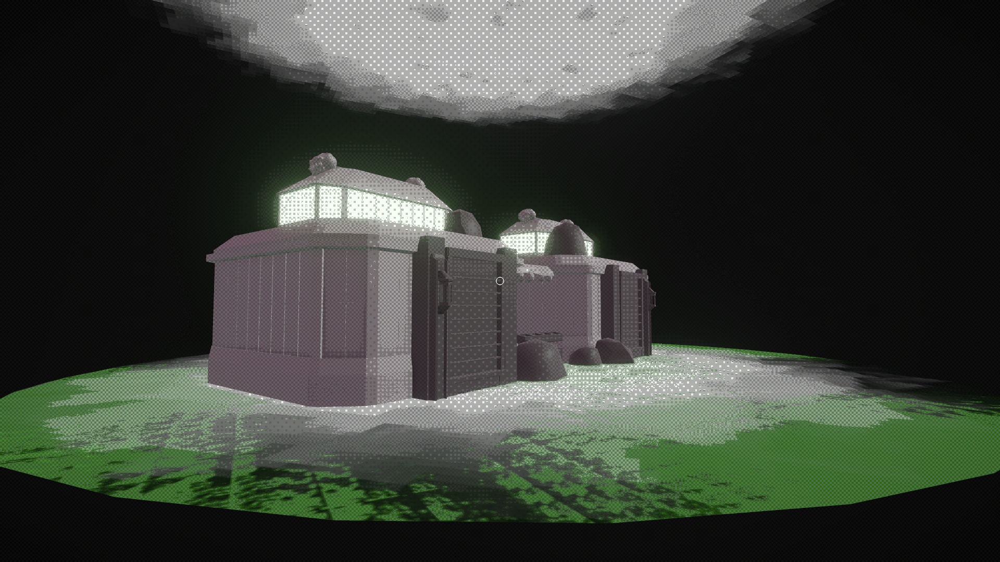
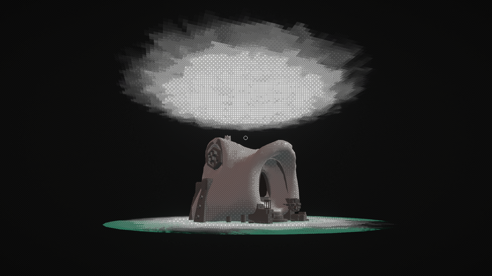
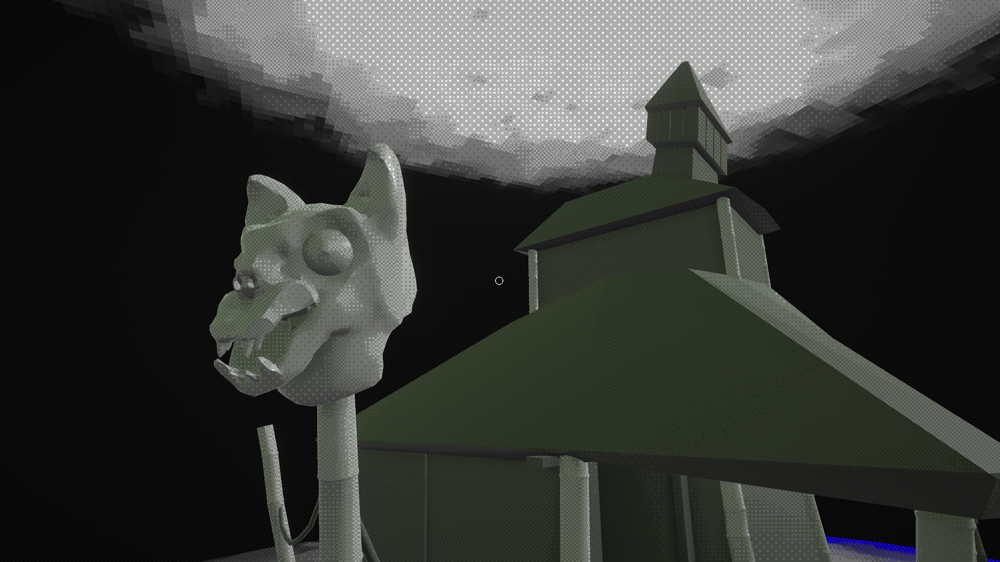
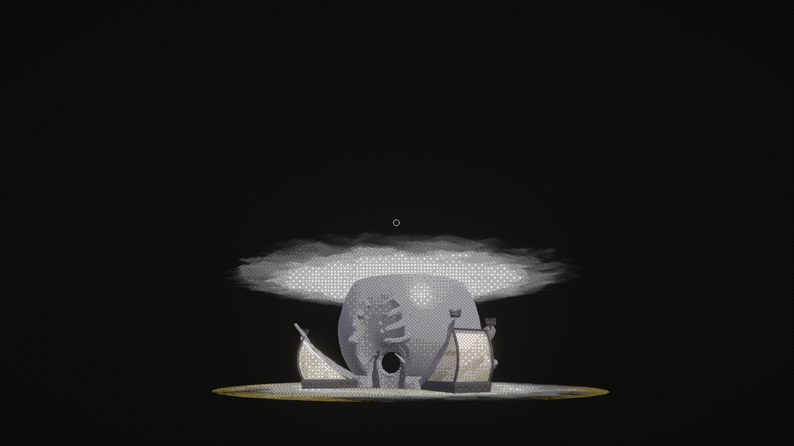
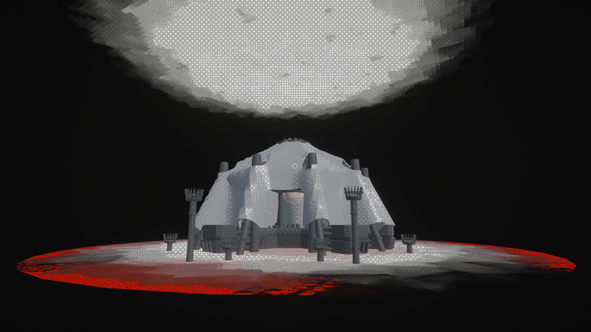

One Thousand Tea Kiosks







Overview
This is a project I made in around 3 weeks for a Playlab course at IT University of Copenhagen. The theme for this prototype was supposed to be "procedural content generation". In the end I opted for a "fake" generator: every asset is set up exactly by hand, but for the user it would appear as a real generator.
The thousand combinations come from choosing your style, accessories, gargoyles, and lights. The possible styles include circussial, bonechard, greenhold, river temple, swamp temple, and raft.
The entire project is more of an interactive tool that showcases my solo developer skills and my style. I wanted to create something gloomy and atmospheric while advancing my design abilities. The mechanics I included are walking around, camera zoom-in, and restarting the generator.
Role and Contributions
This was a solo project, so no specific roles here. I did however take it upon myself to learn a lot of new things: I got more familiar with Unity and scripting, as well as soundscape and asset creation.
As for the contributions, I made over 70 handmade and handsculpted models in VR, which were later optimized. I created a background ambience, which was the first musical track I have done. The entire project was made solely by me with the exception of the dithering shader effect.
Engine and Tools
Unity, Visual Studio, Photoshop, Gimp, Blender, Shapelab (VR), Audacity